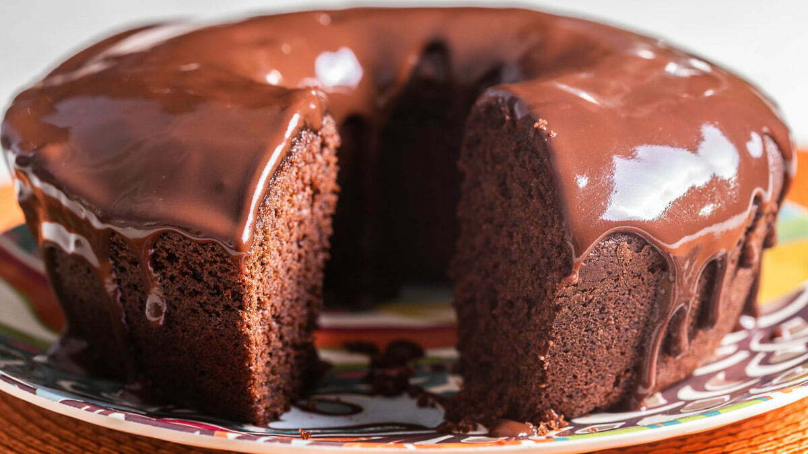

Como preparar um bolo de chocolate
O bolo de chocolate é uma receita fácil que agrada a todos! Pode ser realizada para uma ocasião especial ou apenas para um cafezinho.
Utilizando os ingredientes corretos é possível preparar um belo bolo de chocolate de dar água na boca!
Para preparar é bem simples utilize um liquidificador, bata os ovos, o açúcar, o óleo, o achocolatado e a farinha de trigo. Depois Despeje a massa em uma tigela e adicione a água quente, o sal e o fermento, misturando bem e por fim despeje a massa em uma forma untada e asse em forno médio-alto (200° C), preaquecido, por 40 minutos.
